Relational databases are a type of database management system that stores data in a structured manner using
tables and columns. SQL (Structured Query Language) is the language used to communicate with relational
databases and is used to perform various operations such as querying data, inserting, updating, and deleting
data, creating and modifying tables, and defining relationships between tables.
In summary, relational databases provide a structured and efficient way to store and manage large amounts of
data, and SQL is the language used to interact with these databases and manipulate the data within them.
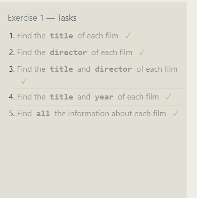 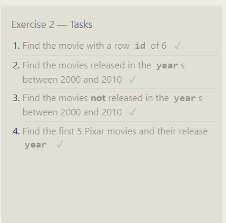 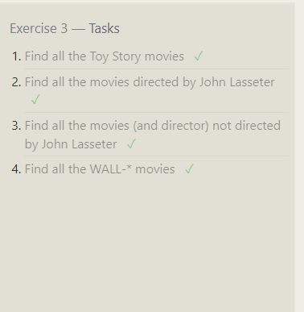 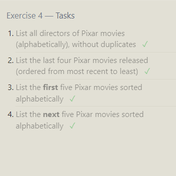 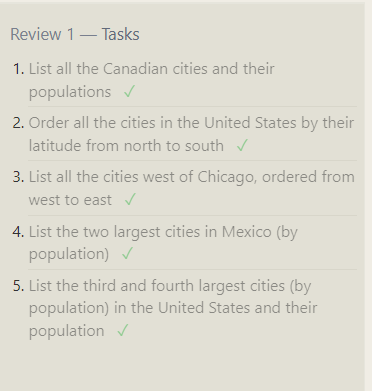 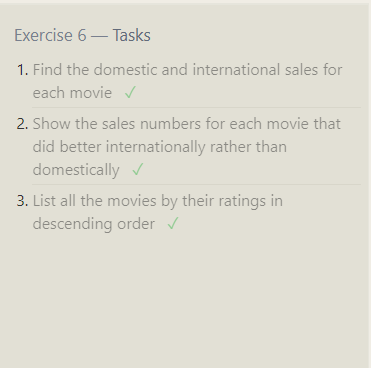 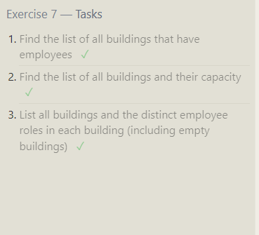 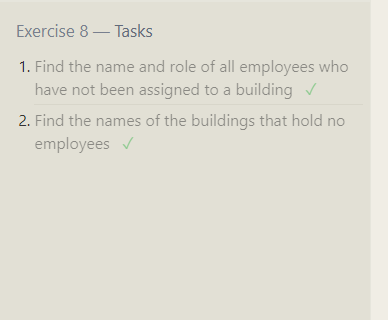 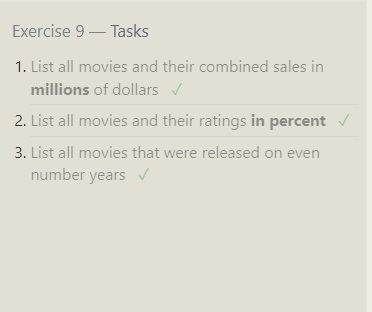 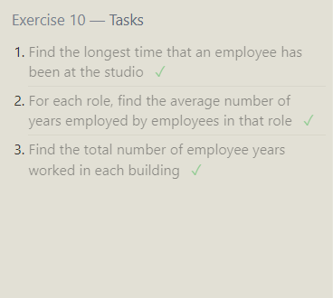 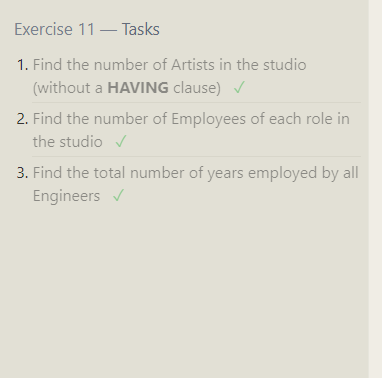 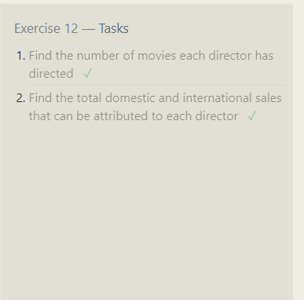 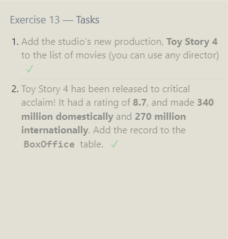 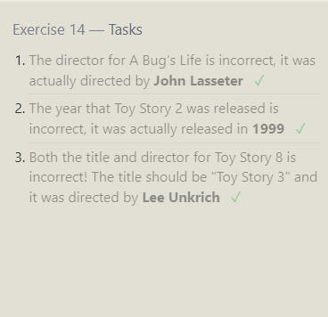 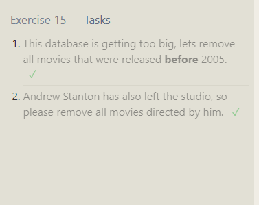 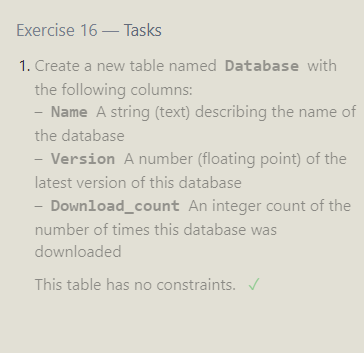 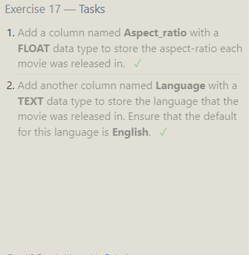 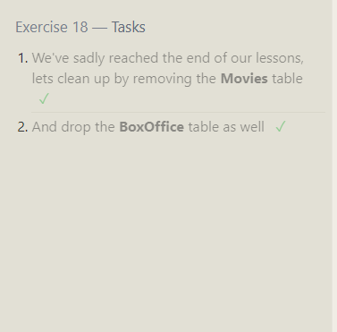